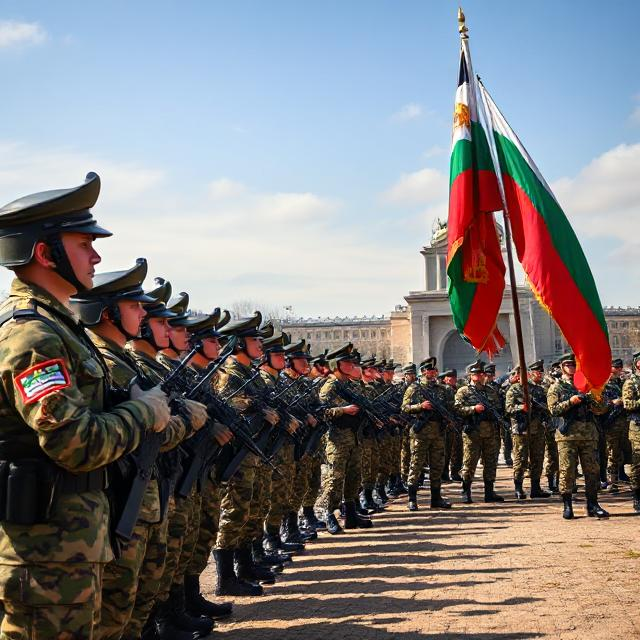

10. Напредък на проекта
Проектът ще отчете напредък по различни начини. Един от тях е с воденето на анкети и статистики, които младите хора ще попълват
относно задоволяването си от начина си на живот, както и това какво мислят за военното обучение.
Друг начин за отчитане на напредък на проекта ще бъде увеличаване на броя на военните в страната. Въвеждането на военното обучение има голяма
възможност да доведе до по-голямо желание на младежта да станат военни.
